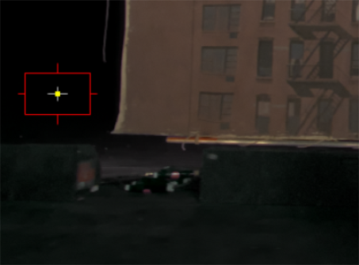
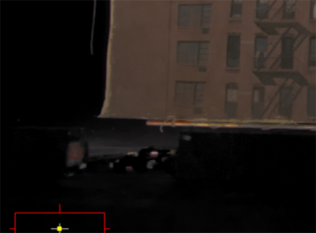

在生产环境中，你可能并不总是在蓝色或绿色屏幕背景上获得统一的颜色，这可能会让拉钥匙变得困难。ChromaKeyer 允许您通过在多个 ChromaKeyer 节点中拾取蓝色或绿色的阴影来额外键入屏幕的不同区域。示例图像显示了一个糟糕的背景，其中包含不同色调的蓝色作为屏幕颜色。
要执行多次传递密钥，请执行以下操作:
| 1。 | 选择初始屏幕颜色，如中所述 挑选屏幕颜色 . |

你可以从图像中看到，ChromaKeyer 在选择的区域做得很好，但是图像的下半部分仍然包含一些噪音。
| 2. | 添加第二个 ChromaKeyer 节点，并在 属性 面板，设置 内面具 控制至 源 alpha . |
当你拉另一个键时，这考虑到了初始 ChromaKeyer 节点的屏幕遮罩。
| 3. | 选择另一个 屏幕颜色 在问题区域中使用第二个 ChromaKeyer 节点。 |

通过将第二个屏幕磨砂添加到第一个屏幕的结果中，该键得到了改进。
| 4. | 您可以添加任意数量的 ChromaKeyer 节点，只要你记得设置 内面具 控制至 源 alpha 除了第一个 ChromaKeyer 节点。 |
|
|